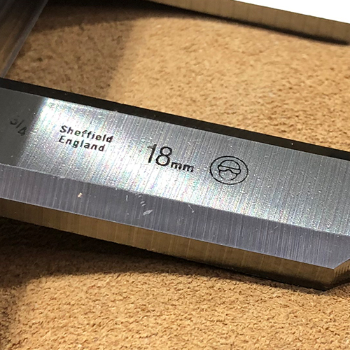

Green Laser Marking System With Extra Power for Robust Applications
The Telesis EV4GDS green laser engraver is a fiber-coupled, diode-pumped, solid-state (DPSS) green wavelength system. The laser beam characteristics are optimized for applications that require high beam quality and stability. The EV4GDS offers extra power and speed—the ideal choice for laser marking, scribing and trimming. The robust mechanical and optical design of the Telesis EV4GDS enables operation in an industrial environment where shock, vibration, and dust are a concern.

- Provides cold marking for ultra-fine and very soft marking on parts
- Great option for marking materials that usually react poorly to infrared wavelengths
- Wonderful for micro-marking, like 2D matrix codes, as well as detailed graphic logos
- Changes surface color for legible marks without burning the material
Models
- EV4GDS
Technology Options
- Mark-on-the-Fly Technology
- Programmable Mounting Post
- IZONIT™ Vision Solutions
